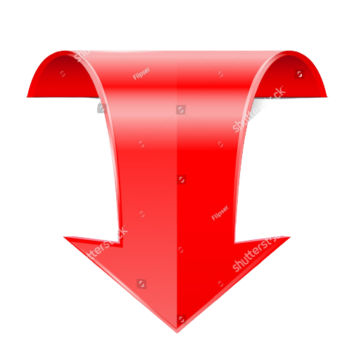

I'm Bijay.
a programmer.
Hello.
My name is Bijay Ketan Bhanja.Where I can learn and grow as an individual and professional with hard work and dedication.
My Skills

Design and Development
I started learning to code when I was 12 years old because I wanted to make my own video games. Over time, I have gained a wealth of experience designing and developing mobile and web applications.
Hot Wings and Challenges
But my best skill is actually in eating hot wings. I am the undisputed queen of hot wing challenges. Ghost Peppers and Carolina Reapers are my favourite snacks.
Get In Touch
If you love hot wings as much as I do.
Love hot wings as much as I do? Let's talk about how awesome they are! We can code while we eat hot wings!